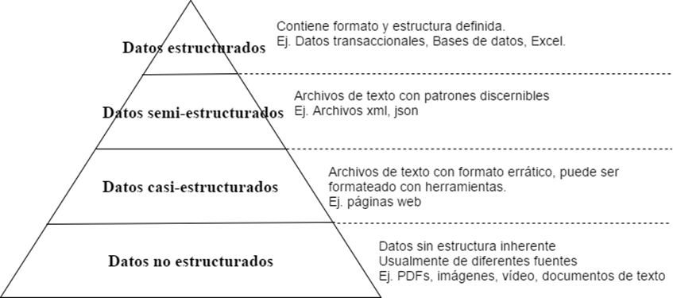
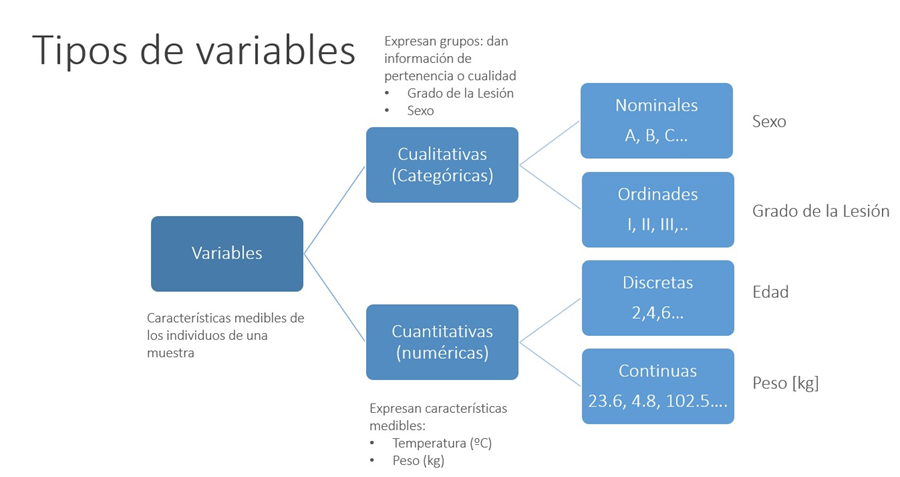
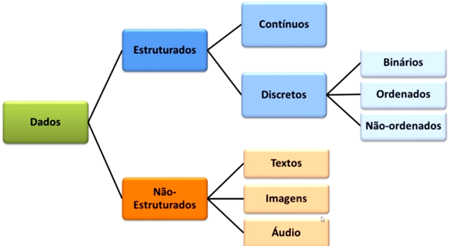

Entendiendo los datos

La ciencia de datos está involucrada en la formulación de preguntas cuantitativas, identificando los datos que podrían usarse para responder esas preguntas, limpiándolas, haciéndolas entendibles, luego analizando los datos, ya sea con aprendizaje automático o con estadísticas, o con los últimos enfoques de redes neuronales.
¿Qué son los datos?
- Una colección de hechos (palabras, números, imágenes etc.)
- Tienen un significado cuando lo relacionamos a un contexto, entonces, se convierte en Información.
- Están en todos lados, por ejemplo en Bases de datos, planillas electrónicas, sensores etc.
Tipos de datos

Tipos de Variables

Taxonomía de los datos

¿Porqué importa la taxonomía de los datos?
- Para el análisis de datos y el modelado predictivo, el tipo de datos es importante para ayudar a determinar el tipo de visualización, análisis de datos o modelo estadístico.
- Los softwares de ciencia de datos, como R y Python, utilizan estos tipos de datos para mejorar el rendimiento computacional.
- Más importante, el tipo de datos para una variable determina cómo el software manejará los cálculos para esa variable.